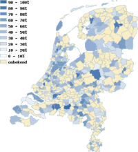

Duurzaamheidsmeter 2007
introductie
Welkom bij de Duurzaamheidsmeter 2007.
U kunt op dit gedeelte van de site de
online vragenlijsten invullen en de
resultaten bekijken voor 2007.
De thema's
De bij de Duurzaamheidsmeter 2007 horende vragen zijn samengebracht onder 5 thema's: de kantine, duurzaam inkopen, klimaat & water, duurzaam & ondernemen, sociaal & mondiaal.
- Per thema is een online vragenlijst beschikbaar.
- Per thema en per vraag zijn de tussentijdse resultaten van de gemeenten in kaart gebracht. U kunt de specifieke antwoorden van gemeenten bekijken en u kunt per thema de scores van gemeenten in de vorm een ranglijst opvragen.
Hoe werkt de site?- Zodra u een thema aanklikt, verschijnt een tweede menu waarin u een keuze kunt maken: uitleg over het thema, gemeente, provincie, antwoorden, ranglijst, vragenlijst. Op deze pagina's kunt u veelal doorklikken op de kaarten of in de lijsten om de informatie meer gedetailleerd te bekijken.
- De door u gemaakte selectie in het tweede menu blijft actief als u een ander thema kiest in het eerste menu. Hierdoor kunt u gemakkelijk bv. de resultaten van een specifieke gemeente voor elk thema doorlopen.
Meedoen/meer informatie?
Bekijk dan de
Hoofdsite van de Duurzaamheidsmeter.
U vindt daar een uitgebreidere beschrijving van het doel van de Duurzaamheidsmeter, de mogelijkheid tot deelname en een handleiding, resultaten van voorgaande jaren, publicaties en het laatste nieuws.
Opmerkingen over het bekijken en printen van de webpagina's:- We trachten compatible te zijn met recentere versies van de meest gangbare browsers.
In Firefox en Internet Explorer functioneert alles naar behoren. In Netscape, Safari en Opera functioneren de in de pagina's gebruikte tooltips (ballonteksten) zeer gebrekkig. In oude versies van bovengenoemde browsers (incl. de niet verder ontwikkelde browser Mac Internet Explorer) krijgt u slechts een tekstversie van de website te zien.
- Bij het printen van pagina's worden de teksten automatisch in zwarte kleur afgedrukt en niet-essentiële onderdelen achterwege gelaten.